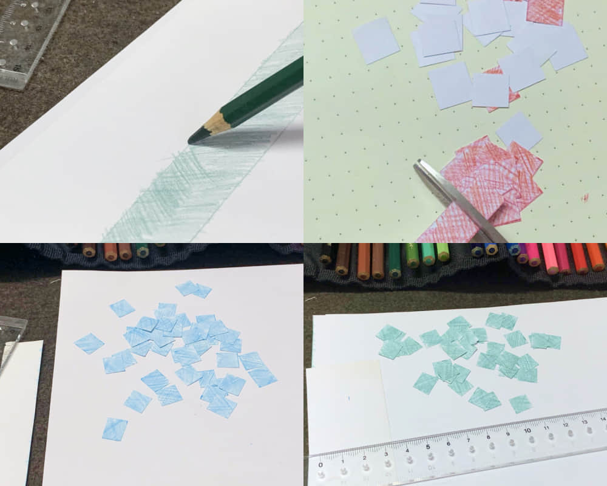
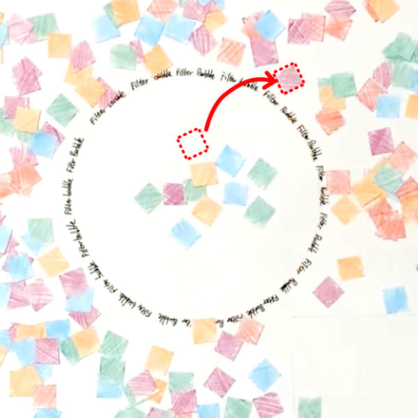

Finding a simple metaphor
Browsing some other explorable explanations made me realized that instead of trying to cover everything, it should illustrate the shift of one straightforward model. And I explored just the right visual model through a paper-based prototype.


The model was simple to understand and remember, while more complicated rules could be implemented on top as “algorithms”.

Step 1.
Choose one piece of information, and move it to “browse history” since you’ve read it.
Step 2.
Increase two picese of the type you read. This is “recommended news” for you.

Step 3.
Move one random piece of other type out of the bubble.